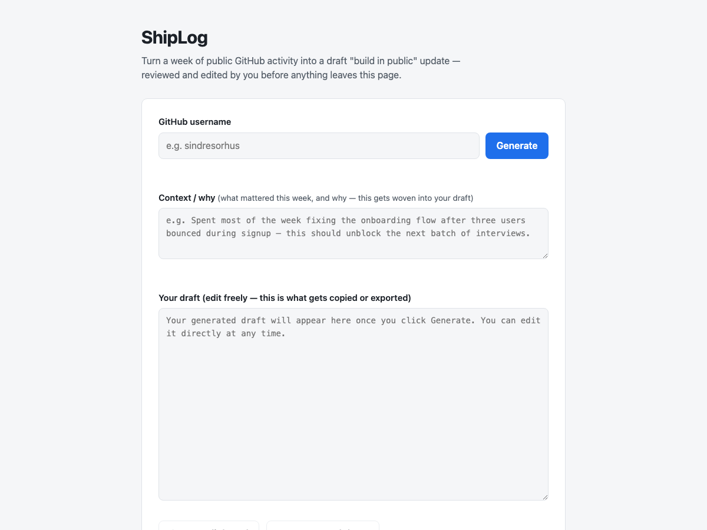
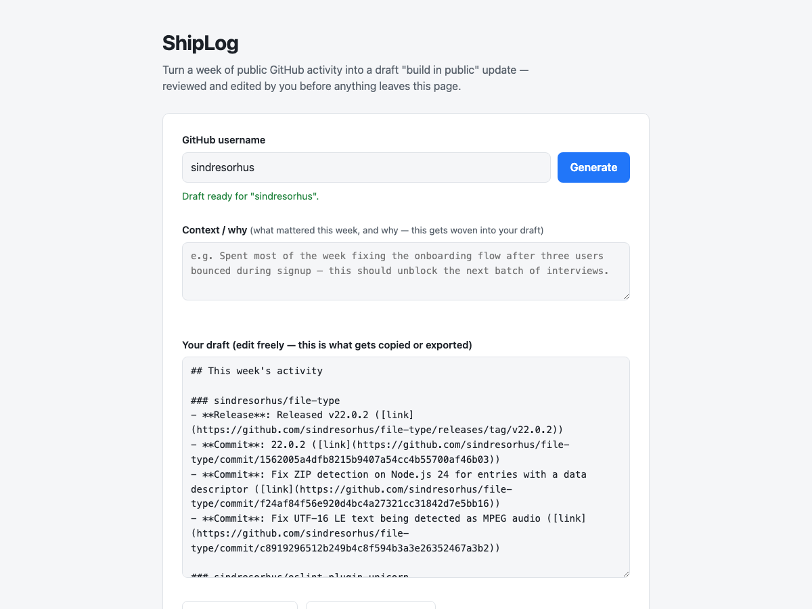
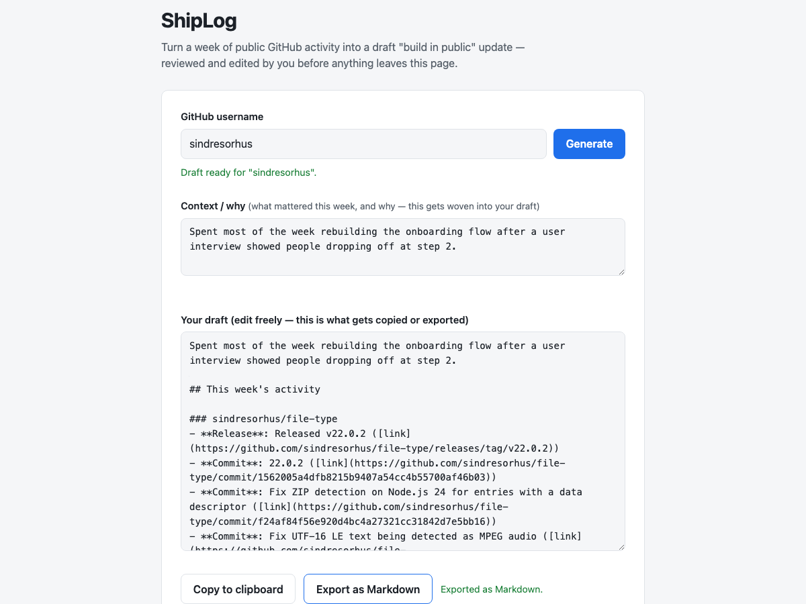

A solo founder's Friday chore
The idea: ShipLog — a founder enters their public GitHub username and gets a draft weekly "build in public" update, generated from real commits, merged PRs, and releases over the last 7 days. They review and edit it before anything goes anywhere. It never posts on their behalf.
The belief: solo founders who build in public lose real time every week doing the same manual chore — reconstructing what they actually shipped from their own commit history, then writing it up. The reconstruction step, not the writing, is what a tool could remove — as long as the founder still controls what comes out the other end.
Why now, honestly: mostly founder intuition, not evidence yet — the hypothesis says so explicitly. GitHub's public API makes the data reachable without auth, and "build in public" is a common habit, but neither confirms the chore is painful enough, or that founders would trust a machine-drafted first pass. That's what discovery exists to find out before any of it becomes a spec.
Four conversations, two roles, one real contradiction
Keel derived six assumptions the idea depends on, then a non-leading interview guide. Four interviews later, the gate had what it needed — and one belief didn't survive contact with the evidence.
commands/add-evidence.md is explicit that the command "processes one real interview, it does not simulate one" — this run deliberately does the thing it says not to, to test the machinery, and says so in keel/decisions.md. Nothing here is evidence real founders want this.
E-001 — Founder-1
E-002 — Founder-2
E-003 — Reader-1
E-004 — Founder-3
Not simulated — the actual script, against the actual evidence
| ID | Statement | Risk | Status |
|---|---|---|---|
| A-001 | Founders spend real, recurring time each week reconstructing shipped work into a shareable update. | high | supported |
| A-002 | A machine-drafted update is only usable if the founder can review and edit it first — not if it posts on their behalf. | high | supported |
| A-003 | Public GitHub activity alone carries enough signal for a genuinely useful first draft. | medium | contradicted |
| A-004 | Founders would keep using this weekly, not try it once and drop it. | medium | supported |
| A-005 | Founders are comfortable with public, read-only, unauthenticated GitHub access. | low | open |
| A-006 | A founder-editable context field is necessary — raw activity alone reads as a changelog. | medium | supported |
Swipe to see all columns →
Two independent sources (E-002, E-003) contradicted A-003 — "GitHub activity alone carries enough signal." Rather than stretch its wording, the belief was replaced: superseded: A-003 in keel/decisions.md, pointing to a new assumption, A-006. The context field this produced wasn't added later as polish — it's in the spec as a load-bearing requirement, traced straight back to this contradiction.
Brief, constitution, spec — one traceable chain
What the evidence ruled out: a draft based on raw GitHub activity alone, presented as sufficient. Two independent sources called that output a changelog, not an update.
What shipped instead: activity grouped by repo, paired with a founder-editable "why" field woven into the draft, and a review step that's structurally mandatory — three independent founders were unconditional on that point.
| Marker | Requirement | Verdict at audit |
|---|---|---|
| A-001 | Fetch + present 7-day activity, grouped by repo, in an editable draft | OK |
| A-002 | Mandatory review; exactly 2 output actions; zero auto-transmit paths | OK — stronger than required |
| A-003 | Raw activity never presented alone as finished (superseded by A-006) | OK |
| A-005 | Public, read-only, unauthenticated GitHub access only | OK |
| A-006 | Always-visible context field, woven into the draft, not decorative | OK |
Checked by grep against the running code, not by matching filenames to requirement text — full table in keel/audit-report.md.
Constitution to converge, unmodified Spec Kit
Keel only surrounds Spec Kit's own pipeline — it never sits inside the build.
What converge actually caught
Copy and Export were reachable with an empty draft — before the first Generate, or after a failed lookup, both buttons were clickable and would silently act on nothing. Not a security issue, but a real crack in "mandatory review" — there was nothing to review. Fixed as task T035: both buttons now stay disabled until the draft has content. This is the pipeline's own safety net working, not a bug found from outside it.
Proof it runs against real data
Driven with a real browser (headless Chromium) against the app actually running on localhost — real username, real GitHub API, zero console errors, zero mocks.


